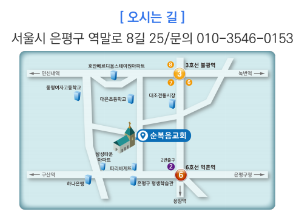

MIDDLE SCHOOL
중등부 예배
11:00 AM
요일매주 일요일
장소1층 비전관
함께 예배하고, 함께 배우고, 함께 성장하는
순복음교회 중고등부에 오신 것을 환영합니다.
하나님을 깊이 만나고, 서로를 세워가며, 삶 속에서 믿음을 실천하는 중고등부입니다.
하나님을 깊이 만나고 나를 새롭게 하는 시간
말씀을 배우고 삶에 적용하는 시간
서로를 응원하고 함께 세워가는 공동체
매주 일요일 오전 11시, 함께 말씀을 듣고 찬양합니다.
요일매주 일요일
장소1층 비전관
요일매주 일요일
장소2층 비전관
팜플렛에 소개된 프로그램을 선택해 자세히 살펴보세요.
찬양과 말씀, 성령 안에서 하나님을 깊이 만나고 새롭게 되는 시간입니다.
※ 세부 일정은 팜플렛에 기재되어 있지 않습니다.팜플렛에 소개된 순복음 아카데미와 동아리 활동입니다.
주일 1시 · 중고등부실
베이스 · 일렉 · 통기타 등
메인 · 신디피아노 / 모든 레슨 무료
영상과 콘텐츠를 함께 만드는 활동
함께 섬기고 나누는 활동
배드민턴 등 함께하는 운동 활동
※ 드럼 외 악기 및 동아리의 세부 운영 시간은 팜플렛에서 확인되지 않아 표기하지 않았습니다.
실제 제공해 주신 사진을 클릭하면 크게 볼 수 있습니다.
처음 오시는 분도 쉽게 찾아올 수 있도록 약도와 QR을 준비했어요.
